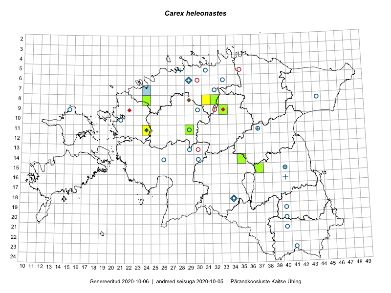

Carex heleonastes — turvastarn
Cyperaceae :: Carex heleonastes L.f. (68); Carex heleonastes Ehrh. (1)

Kaart põhineb 71 kirjel:
vaatlusi 22
herbaareksemplare 47
ELFi kirjeid1 2
Taime kaasaegsed ja ajaloolised leiukohad asuvad 30 ruudus.
Tingmärgid ja ruutude arvud periooditi (U2 / V3 )
█ 2006–2020 (9/–)
◆/◇ 1971–2005 (4/8)
○ 1921–1970 (19/15)
+ kuni 1920 (4/2)
× hävinud (–/0)
? kaheldav (–/0)
| Ruut | Leidja(d) | Leiuaeg | Kirje |
|---|---|---|---|
| 06-33 | J. Eplik | 1936 | ruut/ala: Carex heleonastes L.f. |
| 07-32 | J. Eplik | 1936-06–1936-08 | ruut/ala: Carex heleonastes L.f. |
| 06-29 | H. Salasoo, J. Eplik | 1936-06–1938 | ruut/ala: Carex heleonastes L.f. |
| 16-40 | Glehn | 1860–1938 | ruut/ala: Carex heleonastes L.f. |
| 06-29 | Thea Kull, Toomas Kukk | 2003-08-12 | ruut/ala: Carex heleonastes L.f. |
| 09-33 | Thea Kull | 2014-07-14 | ruut/ala: Carex heleonastes L.f. |
| 08-31 | Thea Kull | 2014-07-17 | ruut/ala: Carex heleonastes L.f. |
| 15-37 | Peedu Saar | 2017-08-03 | ruut/ala: Carex heleonastes L.f. |
| 15-37 | Peedu Saar | 2017-08-03 | ruut/ala: Carex heleonastes L.f. |
| 11-24 | Thea Kull | 2012-07-07 | ruut/ala: Carex heleonastes L.f. |
| 11-24 | Thea Kull | 2012-07-07 | ruut/ala: Carex heleonastes L.f. |
| 11-24 | Thea Kull | 2012-07-07 | ruut/ala: Carex heleonastes L.f. |
| 11-24 | Thea Kull | 2012-07-07 | ruut/ala: Carex heleonastes L.f. |
| 09-33 | Thea Kull | 2006-08-09 | ruut/ala: Carex heleonastes L.f. |
| 11-29 | Thea Kull | 2006-07-07 | ruut/ala: Carex heleonastes L.f. |
| 11-24 | Thea Kull | 2010 | ruut/ala: Carex heleonastes L.f. |
| 11-29 | Thea Kull | 2010 | ruut/ala: Carex heleonastes L.f. |
| 09-33 | Thea Kull | 2010 | ruut/ala: Carex heleonastes L.f. |
| 09-33 | Thea Kull | 2012-07-05 | ruut/ala: Carex heleonastes L.f. |
| 09-33 | Thea Kull | 2012-07-05 | ruut/ala: Carex heleonastes L.f. |
| 09-33 | Thea Kull | 2012-07-05 | ruut/ala: Carex heleonastes L.f. |
| 09-33 | Thea Kull | 2012-07-05 | ruut/ala: Carex heleonastes L.f. |
| 14-30 | T. Lippmaa | 1930-06-29 | TU251163: Carex heleonastes L.f. |
| 16-40 | H. Hiir | 1905-05 | TU251165: Carex heleonastes L.f. |
| 11-37 | A. Jaanson | 1928-07 | TU251167: Carex heleonastes L.f. |
| 23-41 | L. Pihlapuu | 1957-06-07 | TU251169: Carex heleonastes L.f. |
| 23-41 | L. Pihlapuu | 1957-06-07 | TU251170: Carex heleonastes L.f. |
| 11-37 | Gerhard Pahnsch | 1861-06-04 | TU251171: Carex heleonastes L.f. |
| 11-37 | Gerhard Pahnsch | 1861-06-04 | TU251172: Carex heleonastes L.f. |
| 08-44 | T. Lippmaa | 1932-06-14 | TU251175: Carex heleonastes L.f. |
| 06-29 | Albert Üksip | 1930-06-26 | TU251178: Carex heleonastes L.f. |
| 23-41 | L. Pihlapuu | 1957-05-26 | TU251179: Carex heleonastes L.f. |
| 14-26 | T. Lippmaa | 1928-07-02 | TU255849: Carex heleonastes L.f. |
| 15-40 | 1857-06-06 | TU262865: Carex heleonastes L.f. | |
| 15-40 | Glehn | TU269375: Carex heleonastes L.f. | |
| 15-40 | H. Aasamaa | 1935-07-26 | TAM0009164: Carex heleonastes L.f. |
| 15-40 | H. Aasamaa | 1935-07-26 | TAM0009165: Carex heleonastes L.f. |
| 08-44 | Hugo Salasoo | 1932-06-14 | TAM0010597: Carex heleonastes L.f. |
| 11-37 | Paul Thomson | 1925-06-20 | TAA0050163: Carex heleonastes L.f. |
| 09-30 | Gustav Vilbaste | 1935-07-17 | TAA0050164: Carex heleonastes L.f. |
| 18-34 | J. Kaasik | 1959-06-08 | TAA0050165: Carex heleonastes L.f. |
| 18-34 | Thea Kull | 2003-08-06 | TAA0050167: Carex heleonastes L.f. |
| 08-44 | Silvia Talts | 1932-06-14 | TAA0050168: Carex heleonastes L.f. |
| 11-29 | Thea Kull | 2006-07-07 | TAA0050169: Carex heleonastes L.f. |
| 11-24 | Thea Kull | 2005-06-30 | TAA0050170: Carex heleonastes L.f. |
| 19-40 | Linda Viljasoo | 1955-08-22 | TAA0050171: Carex heleonastes L.f. |
| 21-40 | Linda Viljasoo | 1955-08-22 | TAA0050172: Carex heleonastes L.f. |
| 20-40 | Linda Viljasoo | 1955-08-22 | TAA0050173: Carex heleonastes L.f. |
| 06-29 | Thea Kull | 2003-08-12 | TAA0050174: Carex heleonastes L.f. |
| 05-31 | Gustav Vilbaste | 1929-06-29 | TAA0050175: Carex heleonastes L.f. |
| 05-28 | G. Pahnsch | TAA0050176: Carex heleonastes L.f. | |
| 16-40 | H. Kapp | 1856–1889 | TAA0050177: Carex heleonastes L.f. |
| 16-40 | Glehn | TAA0050178: Carex heleonastes L.f. | |
| 05-28 | Wiedemann | TAA0050179: Carex heleonastes L.f. | |
| 11-29 | Gustav Vilbaste | 1935-07-09 | TAA0050180: Carex heleonastes L.f. |
| 10-21 | Gustav jun. Vilbaste | 1934-06-26 | TAA0050181: Carex heleonastes L.f. |
| 09-33 | Thea Kull | 2014-07-15 | TAA0113865: Carex heleonastes L.f. |
| 08-32 | Thea Kull | 2014-08-02 | TAA0114289: Carex heleonastes L.f. |
| 09-33 | Thea Kull | 2014-07-15 | TAA0114310: Carex heleonastes L.f. |
| 15-37 | Peedu Saar | 2017-08-03 | TAA0142331: Carex heleonastes L.f. |
| 15-37 | Peedu Saar | 2017-08-03 | TAA0142332: Carex heleonastes L.f. |
| 14-35 | Ott Luuk | 2017-08-28 | TAA0142724: Carex heleonastes L.f. |
| 11-29 | Ott Luuk, Toivo Sepp | 2019-07-23 | TAA0151441: Carex heleonastes L.f. |
| 11-29 | Ott Luuk, Toivo Sepp | 2019-07-23 | TAA0151442: Carex heleonastes L.f. |
| 08-24 | Ott Luuk, Peedu Saar | 2019-09-05 | TAA0151462: Carex heleonastes L.f. |
| 15-40 | Glehn | TAM0139972: Carex heleonastes Ehrh. | |
| 13-29 | T. Lippmaa | 1930-06-20 | TU251173: Carex heleonastes L.f. |
| 05-28 | A. Dietrich | TU251177: Carex heleonastes L.f. | |
| 09-15 | Gustav Vilbaste | 1930-06-25 | TAA0050166: Carex heleonastes L.f. |
| 08-29 | Arne Kivistik | 1997-08-18 | ELF: 1051 |
| 07-24 | Eerik Leibak | 2010-05-31 | ELF: 13950 |
Eestimaa Looduse Fondi (ELF) andmebaas sisaldab inventeeritud koosluste kirjeldusi ja liigiloendeid. Eriti rohkesti on andmeid märgalade kohta.↩︎
Ruutude arv uue atlase andmekogu järgi. Muuhulgas arvestab vanemat herbaariumi, 2005. aasta atlase välitöölehtedelt uuesti digitaliseeritud andmeid jne. Uue atlase andmekogust pärinevad andmed on kaardile kantud siniste sümbolitega.↩︎
Ruutude arv 2005. aasta atlase (Kukk, T., Kull, T., Eesti taimede levikuatlas. Eesti Maaülikool, Põllumajandus- ja Keskkonnainstituut, Tartu, 2005) järgi. Andmeallikana on kasutatud levik.exe programmi, kus igas ruudus on registreeritud vaid uusim leid. Seetõttu on vanemate perioodide kohta andmed puudulikud. Kasutatud levik.exe andmestikus leidub mõningaid kõrvalekaldeid atlase trükis ilmunud versioonist, sagedamini tarnade ja käpaliste seas. Lisaks leidub selles andmestikus valik liike (peamiselt väheste leidudega tulnuktaimed), mille kaarte trükis ei avaldatud. Vana atlase andmed ruutudest, milles ei ole uue atlase andmekogus leide enne 2006. aastat, on kaardil esitatud punaste sümbolitega. Vana atlase andmetel hävinud ja kaheldavaid leiukohti pole hilisemate (taas)leidude põhjal korrigeeritud.↩︎